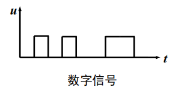

Physical Layer
约 4505 个字 17 张图片 预计阅读时间 30 分钟
物理层基本概念
物理层功能
- 位置：物理层是网络体系结构中的最低层
- 既不是连接计算机的具体物理设备。也不是负责信号传输的具体物理媒体
- 功能：在连接各计算机的传输媒体上传输数据比特流
- 数据链路层将数据比特流传送给物理层
- 物理层将比特流按照传输媒体的需要进行编码
- 然后将信号通过传输媒体传输到下一个节点的物理层
- 作用：尽可能地屏蔽掉不同传输媒体和通信手段的差异，为数据链路层提供一个统一的数据传输服务
物理层特性
- 机械特性：具体的物理结构，定义接线器的形状和尺寸、引线数目和排列、固定和锁定装置等
- 电气特性：规定了多条信号线的电气连接及有关电路特性，在接口电缆的各条线上的电压范围、传输速率和距离限制等
- 功能特性：描述接口执行的功能，定义接线器的每一引脚的作用，指明某条线上出现的某一电平的电压的意义，以及每条线的功能
- 过程特性：指明对于不同功能的各种可能事件的出现顺序
物理层标准及示例
- 点对点通信线路用于直接连接两个结点(EIA RS-232-C标准、EIA RS-449标准)
- 广播通信线路：一条公共通信线路连接多个结点
数据通信基础
数据通信基础理论
傅里叶分析
感觉不会是考察重点，就不写了×
有限带宽信号
- 对于比特率为Ｂbps的信道，发送8位所需的时间为 8/B秒，若8位为一个周期Ｔ，则一次谐波的频率是：f1 = B/8 Hz
- 能通过信道的最高次谐波数目为：N = fc / f1
- 音频线路的截止频率为3000Hz
- N = fc / f1 = 3000/(B/8) = 24000/B
- 结论：对于完善的信道，有限的带宽限制了数据的传输速率
信道的最大数据传输速率
奈魁斯特定理(无噪声)
- 最大数据传输率 = \(2Hlog_2V\) (bps)
- H表示信道的频率带宽
- V表示每个码元的离散电平数目
奈氏准则的结论
- 在任何信道中，码元传输速率是有上限的。若传输速率超过上限，则会出现严重的码间串扰问题，使得接收端不可能完全正确地识别码元。
- 信道的频带越宽(即通过的信号高频分量越多)，就越可用更高的速率有效地传输码元。
- 奈氏准则给出了码元传输速率地限制，但并未限制信息传输速率，即未对一个码元对应多少个二进制位给出限制。
因为码元传输速率受奈氏准则制约，所以要提高数据传输速率，就要设法使每个码元携带更多比特的信息量，此时需要采用多元制的调制方法。
香农定理
- 随机噪声出现的大小用信噪比（信号功率S与噪声功率N之比）来衡量，\(10log_{10}S/N\)，单位：分贝
- 带宽为 H 赫兹，信噪比为S/N的任意信道的最大数据传输率为：\(Hlog_2(1 + S/N)\) (bps)
香农定理的结论
- 信道的带宽或信道中的信噪比越大，信息的极限传输速率越高。
- 对一定的传输带宽和一定的信噪比，信息传输速率的上限是确定的。
- 只要信息传输速率低于信道的极限传输速率，就能找到某种方法实现无差错的传输。
- 香农定理得出的是极限信息传输速率，实际信道能达到的传输速率要比它低不少。
信息量
- 根据香农理论，一条消息包含信息的多少称为信息量
- 一条消息所荷载的信息量等于它所表示的事件发生的概率p的倒数的对数，通常用比特作为信息量的单位 $$ I=log_a\frac{1}{p}=-log_ap $$
- a标志进程(a=2时，I的单位为比特；a=自然数e，I的单位为奈特)，p表示概率
一个例子
基本概念与术语
- 数据、信号与码元：
- 数据是指传送信息的实体
- 信号是数据的电气或电磁表现，是数据在传输过程中的形式
- 码元是代表不同离散数值的基本波形
- 速率、波特与带宽：
- 速率是指数据传输速率，表示单位时间内传输的数据量，常有两种描述形式：
- 码元传输速率，又称波特率，表示单位时间内数字通信系统所传输的码元数（也称调制速率或符号速率），单位是波特（Baud）。
- 码元既可以是多进制的，又可以是二进制的，码元速率与进制数无关。
- 信息传输速率，又称比特率，表示单位时间内数字通信系统传输的二进制码元数（即比特数），单位是比特/秒。
- 带宽（又称频率带宽）用来表示某个信道所能传输信号的频率范围，即最高频率与最低频率之差，单位是赫兹（Hz）。 在计算机网络中，带宽用来表示网络的通信线路所能传输数据的能力，即最高数据率，此时单位不再是 Hz ,而是 b/s 。
- 速率是指数据传输速率，表示单位时间内传输的数据量，常有两种描述形式：
数据通信系统模型
- 通信是在源点与终点之间传递消息或者信息，但信息和消息有着不同的概念
- 消息是指能向人们表达客观物质运动和主观思维活动的文字、符号、数据、语音和图像等
- 能被通信双方所理解
- 可以相互传递
- 信息是指包含在消息中对通信者有意义的那部分内容
- 数据是对某一事实的不经解释并赋予一定含义的数字、字母、文字等符号及其组合的原始表达
- 信号是消息的载体(比如电信号、光信号等)
传输方式
模拟通信：以模拟信号来传送消息的通信方式称为模拟通信，而传输模拟信号的通信系统称为模拟通信系统(是连续的)
数字通信：以数字信号来传送消息的通信方式称为数字通信，而传输数字信号的通信方式称为数字通信系统(是离散的)

串行传输：指数据在一个信道上按位依次传输的方式
并行传输：指数据在多个信道上同时传输的方式
点到点传输/点到多点传输
单工：指两个站之间只能沿一个指定的方向传送数据信号
半双工：指两个站之间可以在两个方向上传送数据信号，但不能同时进行，又称“双向交替”模式，发/收之间的转向时间为20～50ms
全双工 指两个站之间可以在两个方向上同时传送数据信号
基带传输：指未对载波调制的待传信号称为基带信号，它所占的频带称为基带。基带传输，指一种不搬移基带信号频谱的传输方式
频带传输：指利用调制解调器搬移信号频谱的传输体制
数据编码技术
数字数据编码为数字信号
归零编码(RZ)
总共有3个电平，高电平、低电平、0电平
- 高电平变0：1
- 低电平变0：0
不归零制码(NRZ)
原理：用两种不同的电平分别表示二进制信息“0”和“1”，低电平表示“0”，高电平表示“1”
缺点：难以分辨一位的结束和另一位的开始；发送方和接收方必须有时钟同步；若信号中“0”或“1”连续出现，信号直流分量将累加。
结论：容易产生传播错误
曼彻斯特码
原理：每一位中间都有一个跳变，从低跳到高表示“0”，从高跳到低表示“1”
优点：克服了NRZ码的不足。每位中间的跳变即可作为数据，又可作为时钟，能够自同步
差分曼彻斯特码
原理：每一位中间都有一个跳变，每位开始时有跳变表示“0”，无跳变表示“1”。位中间跳变表示时钟，位前跳变表示数据
优点：时钟、数据分离，便于提取
总结
数字数据调制为模拟信号
- 幅移键控法(调幅) Amplitude-shift keying (ASK)：幅移就是把频率、相位作为常量，而把振幅作为变量
- 频移键控法(调频) Frequency-shift keying (FSK)：频移就是把振幅、相位作为常量，而把频率作为变量
- 相移键控法(调相) Phase-shift keying (PSK)：相移就是把振幅、频率作为常量，而把相位作为变量
- 正交幅度调制（QAM）：将AM与PM结合起来，形成叠加信号，设波特率为B，采用m个相位，每个相位有n种振幅，则该QAM的数据传输速率R为\(R=Blog_2(mn)\)，本质上还是使用奈魁斯特定理计算的
传输介质
传输介质分类
传输介质是指发送器与接收器之间的物理通路，可分为
- 导引型传输介质 指电磁波被导向沿着某一媒体传播
- 非导引型传输介质 指电磁波在大气层、外层空间或海洋中进行的无线传播
导引性介质
- 磁介质
- 双绞线：适用于模拟传输或数据传输，通信距离一般为几到几十公里，通常制作为网线
- 同轴电缆：局域网发展初期广泛地使用同轴电缆，现在同轴电缆主要用在有线电视网(寿命长、容量大、传输稳定、外界干扰小、维护方便)
- 光纤(收发端期器件使用二极管)
- 类型
- 多模突变光纤(又称阶跃光纤)：带宽较窄，适用于小容量短距离通信
- 多模渐变光纤：带宽较宽，适用于中容量中距离通信
- 单模光纤：带宽极宽，适用于大容量远距离通信
- 光纤损耗
- 固有损耗指光纤材料的性质和微观结构引起的吸收损耗和瑞利散射损耗
- 非固有损耗指杂质吸收、结构不规则引起的散射和弯曲幅射损耗等
- 类型
- 电力载波：利用现有电力线，通过载波方式将模拟或数字信号进行高速传输
- 优点：投资少、连接方便、传输速率高、安全性好和使用范围广
- 缺点：无法提供高质量的数据传输业务，如家庭电器产生的电磁波干扰等
非导引性介质
- 短波传输(无线电波)：主要以天波的形式靠大气层中的电离层反射传播(达数千～上万千米)
- 多径传播：短波电波通过若干条路径或者不同的传播模式由发信点到达收信点的长度不同，而引起由发信点到达收信点的时间不同的现象
- 多径时散：指不同路径的时延差；与路径长度、工作频率、昼夜、季节等因素有关
- 衰落：指在短波传输过程中，收信电平出现忽高忽低随机变化的现象
- 散射传输(无线电波)：可在被高山、湖泊等障碍物阻隔数百千米的用户之间实现超视距通信，适合于军事应用
- 地面微波：多路复用、射频工作和中继接力是地面微波传输的三个最基本的工作特点。远距离通信则采用中继方式，因受地形和天线高度的限制，两通信站之间的距离一般在40～60km。
- 光波传输：按照光源特性的不同(分为激光通信和非激光通信)，按照传输媒体的不同(分为大气激光通信和光纤通信)，按照传输波段的不同(分为可见光通信、红外线/光通信和紫外线/光通信)
- 大气激光通信：可传输语音、数据、图像等信息。具有抗干扰性好、设备轻便、保密性强、机动性
- 红外线通信广泛使用的家电遥控器、手机、笔记本电脑等短距离通信领域。红外线传输不受无线电干扰，且使用不受国家无线管理委员会的限制，具有方向性、便宜和易于制造等优点。但是红外线对非透明物体的透过性较差，导致传输距离受限制。
- 可见光通信：可见光方向性好，速度高，抗干扰，多功能合一。
- LED可见光通信
无线与卫星通信
无线信号传输
无线传输：可以在自由空间利用电磁波发送和接收信号进行通信
无线电波：指在自由空间(包括空气和真空)传播的射频频段的电磁波
电磁波传输特点：(1)传输环境复杂 (2)传输环境不断变化 (3)环境被电磁噪声污染
卫星通信
卫星通信是指利用人造地球卫星作为中继站，转发或反射无线电波，在两个或多个地球站之间进行的通信。
卫星通信包括(1)宇宙站与地球站之间通信 (2)宇宙站之间通信 (3)通过宇宙站转发/反射进行地球站间通信
卫星移动通信系统分类：(1)静止轨道卫星移动通信系统 (2)中轨道卫星移动通信系统 (3)低轨道卫星移动通信系统
卫星通信系统通常由地球站、通信卫星、跟踪遥测及指令系统和监控管理系统4大部分组成
多路复用技术
频分复用FDM
频分复用是一种将多路基带信号调制到不同频率载波上，再进行叠加形成一个复合信号的多路复用技术
频分复用将整个带宽分为多份，用户在分配到一定的频带后，在通信过程中自始至终都占用这个频带
频分复用的所有用户在同样的时间占用不同的带宽资源(请注意，这里的“带宽”是频率带宽而不是数据的发送速率)
时分复用与统计时分复用
时分复用(Time Division Multiplexing, TDM)将时间划分为一段段等长的时分复用帧(TDM帧)
每一个用户所占用的时隙是周期性地出现(其周期就是TDM帧的长度)的
时分复用的所有用户在不同的时间占用同样的频带宽度
存在的不足：使用时分复用系统传送计算机数据时，由于计算机数据的突发性质，用户对分配到的子信道的利用率一般是不高的
统计时分复用(statistical time division multiplexing，STDM)是指动态地按需分配共用信道的时隙，只将需要传送数据的终端接入共用信道，以提高信道利用率的多路复用技术
波分复用
波分复用(Wavelength Division Multiplexing，WDM)是利用多个激光器在单条光纤上同时发送多束不同波长激光的技术
码分复用
码分多址(Code Division Multiple Access，CDMA)是指利用码序列相关性实现的多址通信 , 基本思想是靠不同的地址码来区分的地址
码片序列(chip sequence)
- 每一个比特时间划分为 m 个短的间隔，称为码片 (chip)。
- 每个站被指派一个唯一的 m bit 码片序列。
- 如发送比特 1，则发送自己的 m bit 码片序列。
- 如发送比特 0，则发送该码片序列的二进制反码。
- 例如，S 站的 8 bit 码片序列是 00011011。
- 发送比特 1 时，就发送序列 00011011，
- 发送比特 0 时，就发送序列 11100100。
两个不同站的码片序列正交，就是向量S和T的规格化内积(inner product)等于0
举个栗子
- 共有四个站进行码分多址CDMA通信。四个站的码片分别为
- A: (-1 -1 -1 +1 +1 -1 +1 +1)
- B: (-1 -1 +1 -1 +1 +1 +1 -1)
- C: (-1 +1 -1 +1 +1 +1 -1 -1)
- D: (-1 +1 -1 -1 -1 -1 +1 -1)
- 问题
- 现收到这样的码片序列：M=(-1 +1 -3 +1 -1 -3 +1 +1)
- 问哪个站发送数据了？
- 发送数据的站发送的1还是0？
- 求解
- A*M=1/8*(1-1+3+1-1+3+1+1)=1因此A发送了1
- 同理，B*M=-1，C*M=0，D*M=1
- 即A、D发送了1，B发送了0，C未发数据
码片序列实现了扩频
假定S站要发送信息的数据率为 b bit/s。由于每一个比特要转换成m个比特的码片，因此S站实际上发送的数据率提高到 mb bit/s，同时S站所占用的频带宽度也提高到原来数值的m倍。
扩频通信通常有两大类：
- 一种是直接序列扩频DSSS(Direct Sequence Spread Spectrum)，如上面讲的使用码片序列就是这一类
- 另一种是跳频扩频FHSS(Frequency Hopping Spread Spectrum)
正交频分复用
不考，就不记了×